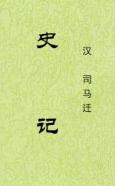

|
提要称“《史记》一百三十卷，汉司马迁撰，褚少孙补。案迁《自序》凡十二本纪、十表、八书、三十世家、七十列传，共为百三十篇。《汉书》本传称其十篇阙，有录无书。张晏注以为迁殁之后，亡《景帝纪》、《武帝纪》、《礼书》、《乐书》、《兵书》、《汉兴以来将相年表》、《日者列传》、《三王世家》、《龟策列传》、《傅靳列传》。刘知几《史通》则以为十篇未成，有录而已，驳张晏之说为非。 今考《日者》、《龟策》二传，并有‘太史公曰’，又有‘褚先生曰’，是为补缀残稿之明证，当以知几为是也。然《汉志·春秋家》载《史记》百三十篇，不云有阙，盖是时官本已以少孙所续，合为一编。观其《日者》、《龟策》二传并有‘臣为郎时’云云，是必尝经奏进，故有是称。其‘褚先生曰’字，殆后人追题，以为别识欤。” “太史公曰：余述历黄帝以来至太初而讫，百三十篇”明明是说已完成了的，缺失很有可能文字违禁或担心违禁。 全本，小标题为编者添加，可能有繁简互换错误，可参照《精校本》。（2023-1-18，独孤氏整理，W，初校） |
 |